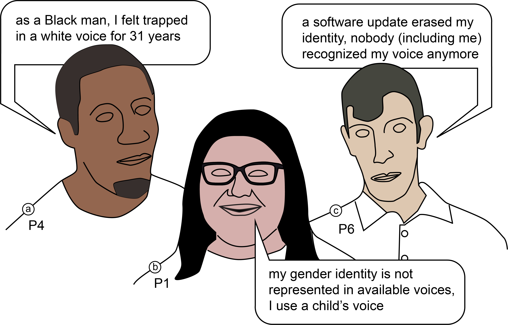

Me, Myself, and My Voice: Exploring Cultural and Linguistic Identity in AAC AI-generated Voices
- Tobias Weinberg Cornell Tech
- Aaleyah Lewis University of Washington
- Ricardo E. Gonzalez Penuela Cornell Tech
- Weicong Hong Cornell Tech
- Jennifer Mankoff University of Washington
- Thijs Roumen Cornell Tech

Fig. 1:We explore cultural identity in AAC voice generation, participants in our study reported several forms of misalignment, misrepresentation, and dependence on their synthetic voices. Creating voices that align culturally and emotionally with their users is crucial to reinforce a sense of self and identity for AAC users.
Abstract
Voice is a central element of identity. We recognize people by their voice, and we uniquely express who we are with it. For people who rely on augmentative and alternative communication (AAC) systems, such as speech-generating devices (SGD), the device's voice becomes an identity marker others associate with them. Yet, it is hard to find a voice that truly aligns with one's identity both linguistically and culturally. Although modern AI-generated voices can reproduce diverse accents and speaking styles, AAC users still lack accessible ways to articulate how they want an identity-aligned voice to sound like. We first conducted a survey of AAC users (across eight countries) to characterize current voice representation, finding that non-binary, transgender, and non-US-born respondents rated their current voice support identity alignment consistently lower than other respondents. To examine how AAC users respond to voices designed to reflect their cultural identity, we built a tool that elicits cultural markers through guided questions and generates personalized voice candidates for participants to hear and reflect on. After participants heard the voices, we interviewed them to examine what it means for a voice to feel culturally representative, how they interpreted voices with cultural connotations, and how these voices shaped their sense of identity and agency. Our findings show that cultural voice alignment runs deeper than accent or language alone; it touches on belonging, self-recognition, and what it means to be heard as who you are.
Citation
@article{weinberg2026me,
title={Me, Myself, and My Voice: Exploring Cultural and Linguistic Identity in AAC AI-generated Voices},
author={Weinberg, Tobias and Lewis, Aaleyah and Penuela, Ricardo E Gonzalez and Hong, Weicong and Mankoff, Jennifer and Roumen, Thijs},
journal={arXiv preprint arXiv:2605.24337},
year={2026}
}
Acknowledgements
We thank the participants in both studies for their time and for
sharing their experiences with us. This work was supported by the
Center for Research and Education on Accessible Technology and
Experiences (CREATE) at the University of Washington and the
Rehabilitation Engineering Research Center (RERC).
The website template was borrowed from Michaël Gharbi.